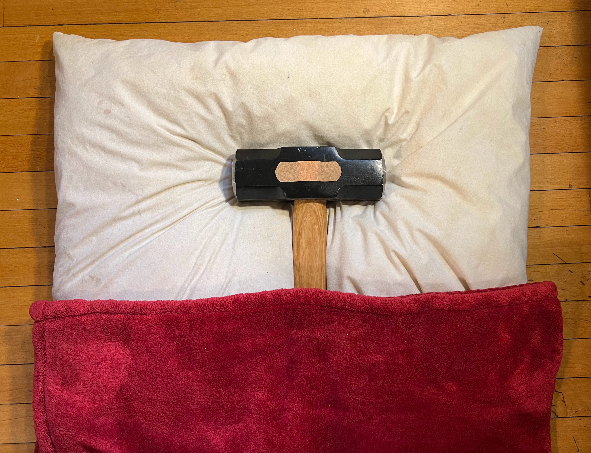

Everyday Systems: Podcast : Episode 69
Shovelglove Recovery
Hi, this is Reinhard from Everyday Systems.
Most of my listeners, I assume, are familiar with Shovelglove, even if you’re not practicing my DIY sledgehammer exercise routine.
A little refresher just in case: Take a sledgehammer and wrap a sweater around the hammer end of it so you don’t dent the floor or kill the cats. This is your Shovelglove. Set a timer for 14 minutes and perform manual labor inspired movements without actually hitting anything; you swing the hammer and sort of “catch” it. Do this every non-holiday weekday. That’s shovelglove in a nutshell.
Today I’m going to talk about a Shovelglove relevant – I hope not shovelglove caused, but I can’t be sure – injury I had, and how I’ve been recovering from it. I’m doing this episode both in the interests of full disclosure, so other Shovelglovers and potential Shovelglovers are aware of this potential risk, and because I hope my experience in recovering can be helpful to others who are dealing with similar issues, whatever their preferred form of exercise. I’m guessing most people, if they exercise regularly at all, at some point in their lives are going to have to deal with an injury that impacts their routine, and they may find it difficult to respond to and recover from such a setback, not just in terms of the physical healing, but also and maybe even more importantly in terms of maintaining and re-building the habit, how to keep the habit from deteriorating entirely while they’re limping along in some state of physical debility.
I’m going to start with the messy facts of my personal experience, and then try to extract some general principles that I hope might be useful to you, too, whether you’re doing shovelglove, or some other form of exercise. It’s as much a cautionary tale: “don’t do this stupid thing I did” as exemplary “look what I did right!” But I hope both the cautions and positive examples will be helpful.
Rewind to October 2021, almost one year ago as I’m recording this: For 20 years I’d been doing Shovelglove, 5 days a week, chopping wood, driving fence posts etc., injury free.
It sounds dangerous, right? Swinging a sledgehammer around in your living room. But in all that time, I’d never once had an injury caused by or even impacting Shovelglove. My cats died of natural causes, one just a few months shy of his 21st birthday, and the most time I took off for any kind of soreness was maybe one day, and that was rare, and usually obviously caused by something else I’d been doing (like a pullup contest at work). This was in stark contrast to my experience with running, an exercise which seems comparatively safe and sane and normal. Everybody runs, right? But I would constantly injure myself running. And so, apparently, as I discovered as I asked around, does pretty much everyone else who runs. I thought, maybe shovelglove is safe because it’s so obviously dangerous and crazy, swinging a sledgehammer around in my living room, that I have no choice but to be careful.
And then, all of a sudden, after 20 injury-free years, feeling really pleased about myself and my injury free run, I suddenly started noticing a pain in my right arm, on the inner arm, just below the elbow. I immediately thought the culprit must have been the five air conditioners I’d foolishly-heroically carried down to the basement solo in one weekend. Partly because shovelglove has gotten me so strong, and partly because I am stupid, I am prone to such feats.
I thought the pain would go away quickly. It didn’t.
And Shovelglove was suddenly uncomfortable, some moves in particular. Hefting my beloved cast iron pans while cooking was painful, carrying shopping bags from the grocery store, turning a screwdriver, popping the release mechanisms in screen windows. I’d even frequently notice a pang of discomfort when I was washing my face, something about the micro muscles or tendons involved in that particular movement.
I took a day off, then a full week off of Shovelglove and figured it would go away. I started to get a little scared when it didn’t.
It’s not that the pain was so intense, but that it was alarming. It wasn’t agonizing, but it was pronounced enough that I couldn't ignore it. It was an undeniable sign that something was wrong.
I probably should have seen my doctor sooner. But I knew he’d recommend physical therapy. And I’d had lousy experiences in physical therapy – all those running injuries. Everytime I’d gone in for a sore IT band or runner's knee I’d been given a long list of PT exercises that would only get longer in subsequent visits, and it was unclear whether they helped at all. It seemed like punishment for complaining rather than anything actually therapeutic.
I don’t want to rag too much on PT – I know it is helpful for many people in many cases, and it is possible, despite my grousing, that it may actually have been somewhat helpful to me too in some subtle, barely perceptible way. But Shovelglove has this concept of “14 minutes of schedualistically insignificant time,” – and PT, in my experience at least, emphatically does not.
Was I ever compliant! Those ragged printouts were holy writ to me. Maybe physical therapists don't actually expect people to be that compliant because I eventually had to give up running because I was spending more time on the PT exercises than actually running and it just didn’t seem worth it. I’ve since started up again, running, but only very gradually, the tiniest distances, and after a two+ year hiatus.
In the case of Shovelglove, I think I was also a little afraid that my doctor would say “stop doing it. Shovelglove is the culprit.” I was scared I’d have to stop doing this thing that I loved and had become almost a part of my identity. And even worse I was scared that I might be forced to realize that maybe I’d been advising people through my website to do something potentially harmful. Sure I have that funny disclaimer on the website and never made any pretense to expert knowledge, but nonetheless, people were doing it. Some of you, I imagine, are doing it.
Another thought I had was, maybe this isn’t exercise related at all, maybe it’s the opposite: work-related RSI from mousing and keyboarding too much. That was terrifying in a different way. Professionally I don't have much alternative to mouse and keyboard.
At the time, I had some excuse for not thinking clearly. My father was very sick. He had Parkinsons, bad, and for the last few years I’d been managing his care. He’d been transferred from the nursing home to the hospital for psychiatric reasons, and in November he died. This was three weeks into a new job for me. My employer was great about it, but still, the timing was not ideal. My mom had died a year earlier after years of intense anti-psychotics. And of course, you know, covid. I was so emotionally and physically exhausted that for a while I entertained yet another theory, that my arm injury might be psycho-somatic, caused by this stress.
And then I had one last theory, my favorite I think: hubris. The day before I noticed the pain in my arm I’d been bragging on the shovelglove facebook group about how I’d never had a shovelglove injury in 20 years. Clearly, I thought, some higher power subscribes to that group and was not pleased.
I called my injury “uppy arm,” because it reminded me, and may actually have been related to, brief episodes of discomfort I’d felt when my kids were very young and constantly demanding that I pick them up. “Uppy, daddy, uppy!”
Naturally the first thing I did was consult the internet. I learned that my “uppy arm” was in fact golfer’s elbow, medial epicondylitis, a self-diagnosis later confirmed by my doctor. That much the internet was good for. In terms of what to do about it, there I had less immediate luck, though not for lack of ideas. Search the internet and ye shall find an infinity of stretches, exercises and therapies for golfer’s elbow – it was worse than going to PT. I tried ice, cross fiber friction massage, flex bar twists, other things I’ve since forgotten. I got myself a vertical mouse, standing desk setup, and ergonomic keyboard in case my RSI theory might be right. Nothing seemed to make much of a difference. I tried resuming after my week off with the lightest sledgehammer I have, the 6 pounder I bought for my children, down from the 20 pound behemoth I’d been using for over a decade. But it still hurt, particularly certain moves. After some more fits and starts, in March, I decided it was finally time to see my doctor.
It was golfer’s elbow all right, but he couldn’t tell me with certainty what caused it. It might have been the air conditioners. He shrugged his shoulders about the Shovelglove. The RSI didn’t sound likely, but who knows. I was too embarrassed to mention my psychosomatic or hubris theories. It was likely some odd combination of factors, compounded by middle age – I turn 49 next month. We would never likely get to the bottom of it, find that one smoking gun – I guess when you’re pushing 50, there’s smoke all over the place.
What was clear was that I should take a break from any exercise that might exacerbate it for two solid months, then slowly ease back in. The one upper body strength exercise he OKed for me during this period was fist pushups. You literally make a fist and pushup on that. It hurts., so use pillows. Apparently even regular pushups put strain on that tendon. He also recommended a compression brace (you can get these at CVS, they’re not expensive) when exercising to take pressure off the tendon, and of course, a nine-page printout of PT exercises. If I didn’t notice significant improvement after two months, he mentioned a surgical option that involves punching small holes in the tendon to stimulate healing. He said it in this “no big deal” tone of voice, but it didn’t sound appealing, so I left feeling highly motivated to notice improvement.
Throughout this whole time, one good thing I’d done, ever since I first noticed the discomfort, I tried to keep the Shovelglove time sacred, those 14 minutes in the morning. Even when I was doing nothing but stretches and massages and icing, I set myself up in my Shovelglove spot in front of the TV in the living room, and internet PTed away, infotaining myself with German language videos. I wanted to keep everything about this habit that I’d spent 20 years developing alive while my physical injury healed. I’m happy I did this and recommend it to anyone whose exercise routine has been disrupted by an injury. The habit muscle is just as important as any physical muscle and if you keep that going it becomes much easier to resume the physical part as you heal up. And the chronological aspect of the habit is the most important part about it, and one you can keep up no matter what physical issues you’re dealing with. I once did a podcast episode titled “14 minutes of anything” to emphasize this and it’s a lesson I’m glad I didn’t just preach but actually internalized. I did many dumb things in the wake of my injury, and made many false starts, but this is one crucial thing I got right, right off the bat.
Besides keeping that “schedualistically insignificant time” in place, another original shovelglove principle that helped was “maintenance is more important than progress.” Whether or not hubris had brought on this injury, I knew it could certainly impede my recovery from it. I had to ease back into shovelglove as slowly as possible. Throttling my impatience to get back into it was more important than actually making progress. In a way, fighting against the need to make progress would be my progress. But it was hard to pin down just how to do this. Clearly I needed to go down to a lower weight sledgehammer. But for all moves or just some? Should I do lower rep counts as well? Fewer days?
After much trial and error, some of it before this 2 months of zero shovelglove that my doctor advised and I dutifully took off, I settled on the following:
1: Weight
I started with the lightest weight hammer for all movements, so 6 pounds. Depending on how the arm is feeling, I’m allowing myself to progress no more than one hammer up per month. For months where the weights are an especially big percentage jump, like the 16 pounder from the 12 pounder, I might do two months, or ease in one heavier hammer routine a week, then another, then another until I’m fully eased into it. Over the years I’ve accumulated quite a collection of hammers, so this hasn’t required buying any more yet (though I did have to get a 16 pounder, just before recording this episode actually, because I seem to have given that one away to an acolyte). I started with the six pounder in June, went up to 8 in July, 10 in August, and have been doing 12 in September. I may or may not be jumping to the 16 pounder in October, since, as I mentioned, that’s a big jump. Even though some of the movements are less problematic than others with my unjury than others, I’ve been doing them all with the same weight for simplicity of tracking progress, and so I can brainlessly keep shugging without having to having to think what size hammer I should be using for each new movement.
2. Speed
I started doing each movement almost in slow motion, think shovelglove tai chi. I wanted to go as easy as possible on the catching or braking motion in particular – the part that’s hardest on the tendons. It’s gotten harder to remember to do this as I no longer feel pain, and I keep having to remind myself to stop automatically speeding up. I mean maybe that’s a sign that it’s OK – but I want to play this as safe as possible because I’ve learned that sometimes pain is delayed, so I’m still, even as it’s feeling fine, continually reminding myself to go at least a little slower.
3: Reps
I’m doing the “the routine of 7s,” 7 reps of each movement that I do, going through the full litany of movements, then cycling back to do a second 7-rep set of each. There was a period when I was doing fewer reps, but with heavier hammers, and periods when I experimented with up to 14 reps. But what I settled into and seems to be working is this routine of sevens, gradually progressing from the lightest weight hammer and going with tai chi slowness. At some point I might go back to the routine of 14s, a single cycle of 14 rep movements, which I’d been doing for many years, before the injury, but for now, 7 seems safer, and is doing the job. I think switching movements after just a few reps is more sparing of the tendons than higher rep count sets. This also happens to be the exact routine that I have in my video on the site, so that is just as valid and good as it ever was, minus one movement.
4. Movements
I do all the canonical shovelglove movements EXCEPT arm wrestle. You can see them all in the video. I’m actually blanking on how many there are. I want to say 12. There is a PT movement slightly resembling arm wrestling that I do with a fire iron, or a bare sledgehammer handle with no weight attached to it, and I just hold it up vertically and rotating the wrist side to side. So I like to think even this movement is being continued in some fashion, that I am honoring it somehow at least, like an ancestral spirit.
5. Days
That first month, I started with just two days a week, down from the 5 days, every week day, or N-day, in No S Diet terminology that had been my norm for 20 years. A month in, I’ve moved to 3 days, Monday, Wednesday, Friday. On off weekdays, I do other exercises during my shovelglove time, to keep that habit of week-daily exercise alive: fist pushups (aka degraded beast), squats – body weight squats (aka fertilize the fields), capering around the room like a lunatick until I hit 2000 steps on my fitbit, or more recently, mini runs outside topped off by a walk (yes, after two years I’m daring to slowly run a bit again, throttling my progress on a month-by-month basis in a similar way to what I’m doing with shovelglove). So I preserve the N-day vs. S-day structure for exercise, but mix in other stuff besides shovelglove to let the shovelglove muscles (and tendons) recover on alternate days. Sticking with the manual labor theme, I think of the alternating exercise days as crop rotation. At this point, I don’t know whether I’m going to stick with this “crop rotation” shovelglove long term, or go back to five days a week.
6. Stretches and PT exercises
I do these before every workout, shovelglove or alternative. I do both the golfer’s elbow stretches and PT, and the runners knee stuff. I’ve whittled the movements down to a smaller subset that feels like it maybe makes a difference, and I don’t do quite as many sets or as slowly as my tattered printouts recommend, but even in its reduced form, it still takes almost as long as my entire shovelglove routine to do this prep work. That’s a drag, but I think it may be the price of continuing Shovelglove, or maybe any exercise routine, into middle age and beyond. I’ll continue to experiment with whittling down the PT gradually to see what I can get away with. But worst case scenario, if this is what it is, I can live with it. At least I’ve got the German news and Netflix to infotain me while I stretch.
7. Brace
I still wear the compression brace my Dr. recommended 6 months ago while doing shovelglove and any other upper body exercises (like the fist pushups). I don’t know how long I’ll continue to do this. Probably until I’m comfortable with my 20 pounder again, if I get that far.
So that’s been the mechanics of my shovelglove recovery routine, or I should say, phase 2 of my recovery routine. It took me 6 months of experimentation and flailing around before that all gelled and I started making slow and steady progress again.
But just as important as these mechanics, maybe even more so, were a few shifts in mental attitude:
1. I mentioned this already, but it bears repeating: A core shovelglove mantra is “maintenance is more important than progress.” But when you’re starting from zero, from less than zero in a way because of an injury, that’s especially hard, and especially important. The real work here is throttling your impatience to make progress, to avoid re-injuring yourself and setting yourself back even further. I’m grateful to longtime everyday bulletin board member NoSDoc for letting me know early on that tendon injuries heal incredibly slowly, and that it can take a full year for them to heal completely. (Danke, Stefan!). That knowledge was extraordinarily helpful to me in setting my expectations and psychologically hunkering down for the long haul. I try to keep my physical movements Tai Chi slow as I mentioned already, but even more important, I try to keep my progress Tai Chi slow.
2. Pay sustained and methodical attention to pain and discomfort. Paying very careful attention to my body’s pain signals and tracking these has been important precisely because progress has been so slow and fitful, it might have been completely invisible otherwise. The main way I’ve been tracking these signals is on the back of my daily personal punch cards, which I then transfer once a week to my life log spreadsheet. I keep a mini journal, one little row each about how I’m doing in terms of body, soul, and spirits, these three areas Usually I’ll write just a few words “slight uppy,” or “bad uppy” or “twinge while washing face,” or “elbow” if I noticed it in an unusual location or (my favorite) “barely noticed.” “barely noticed” is as good as it gets because the downside of paying such careful attention is I’m bound to notice something. If I did something unusual, physically, something potentially problematic that I might only feel the next day, I’ll note that too, like “carried heavy shopping bags from star market,” or “jumped around on monkey bars with my 10 year old son” or “swam.” This tracking has been helpful in discerning progress over time, keeping my morale up, identifying and stopping activities that seem to have a negative impact, and simply reminding myself to pay attention and not indulge in thoughtless heroics. I don’t know when or if I’m going to stop this tracking. I may have reached the age at which something like this level of attention is important if I want to remain active without constantly injuring myself.
3. Peripheral vision. I pay attention not only to my exercise routine itself, but to other physical activities that could impact it. I consciously avoid formerly habitual foolhardy feats of strength that I now know, from my mini journal entries, even if they didn’t cause my uppy arm to begin with, definitely do impact it. So I pace myself with the air conditioners, spread it out over several days. I bring a big backpack when I go grocery shopping on foot, so I don’t have to heft all those heavy bags with my arms. I even ask for help on occasion. I avoid other exercises, like pullups, that I am fond of, and like to use as a benchmark for my fitness, but I worry have the tendency to strain this tendon. So maybe one day I’ll resume them again, but only after I’m comfortably at cruising altitude with shovelglove again.
4. Flexible persistence.”No pain no gain” is dumb. But it’s only half dumb. Yes, it’s important to steer around and back off activities and movements that cause physical pain, but it’s just as important to keep the larger effort, the contours of the habit going. How do you do this? How does one shovelglove without a shovelglove? It can be a bit of a head scratcher. But the stupid simple and most important part is the time, keeping that “schedualistically insignificant time,” the timebox, holy. If you do that, you will fill in the rest. It may take some experimentation. Run in place, Do jumping jacks. Try to remember high school gym class. It may take some really dumb exercise sessions where you’re a bit embarrassed at your weird and poorly thought out jigglings. It may be periods of just stretches and PT instead of “real” exercise. But if you can keep that time box sacred, and keep an open, experimental attitude, it will both help you heal and will get filled in with real exercise as you heal.
5.Everything is hitched to everything else in the universe – make it in a good way. This is a riff on a quote by the great naturalist, John Muir, about how you can never change just one thing, that any change always has consequences, indented or otherwise. Did my pandemic physical injuries hurt or seem to mirror the state of my soul? Well, I vowed to let the feeling of physical recovery and slow progress now help my soul, to view it as symbolic and lift my spirits as it had hurt them (and/or been hurt by them) on the way down. That made me take my shovelglove more seriously. Because I could see that as a symbol, an example, an infectiously inspirational pattern of neurons firing for the good, it would help me in every other aspect of my well being, not just the physical.
6. Gratitude instead of hubris. I vowed to enjoy whatever I could do. Maybe I’ll never get up to my 20 pounder again. Maybe I’ll never run more than a mile or two again. At some point in my life, as I age, that will certainly be true. So I’ve vowed that I will be grateful that I can shovelglove at all, that I can run at all. For whatever I can do, I am and will be grateful.
7. Most important: do not wait six months to see a doctor like I did if you are experiencing significant pain. That was really dumb. Fortunately you’ve had me already to be dumb for you so you don’t have to do that experiment yourself. Moreover, though my experiences with PT may not have been that miraculous, I’ve heard from many other people who’ve gotten enormous, immediate benefit. Apparently not all physical therapists are created equal. I did not sufficiently appreciate that at the time, but I do now, and should anything like this ever crop up again. I will search hard for someone really good.
Well, when all is said and done, I still don’t think shovelglove is a particularly dangerous exercise. Listen to the names of all these exercise-related injuries: runners knee, golfers elbow, tennis elbow. All exercises have the potential to cause injury. We don’t just stop doing them because of that. We assess what’s going on, we pivot, we keep going if we can. I had an injury free 20-year run with shovelglove, and that’s pretty great. I’m hoping get another 20-years plus in, flexibly persisting through whatever else life and increasing age throws at me, and being grateful for whatever I can manage.
Thanks for listening.
© 2002-2022 Everyday Systems LLC, All Rights Reserved.